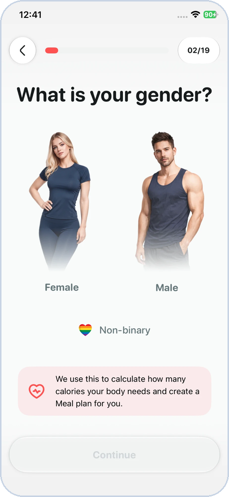
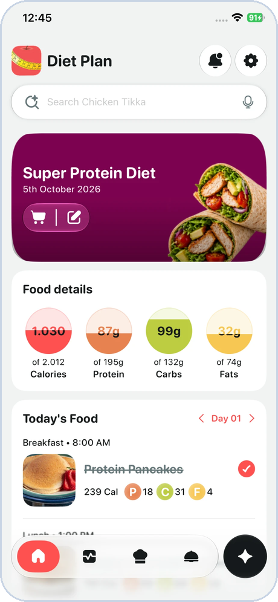
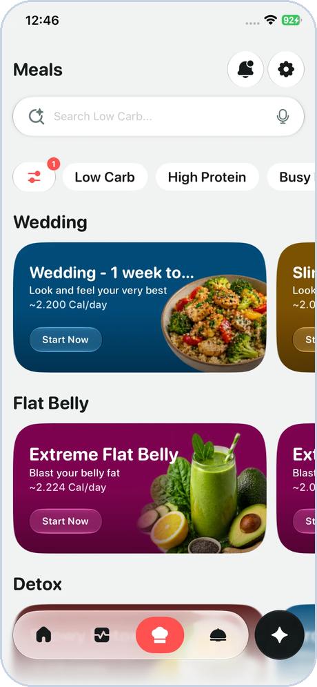
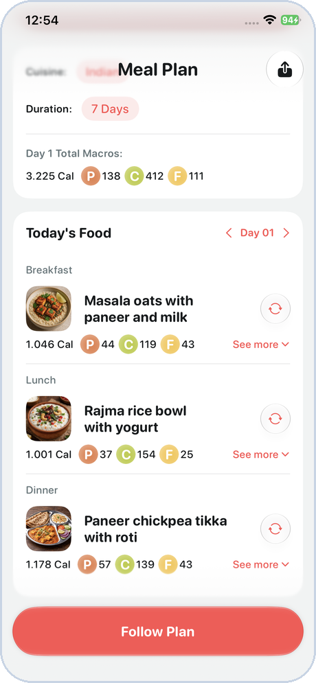
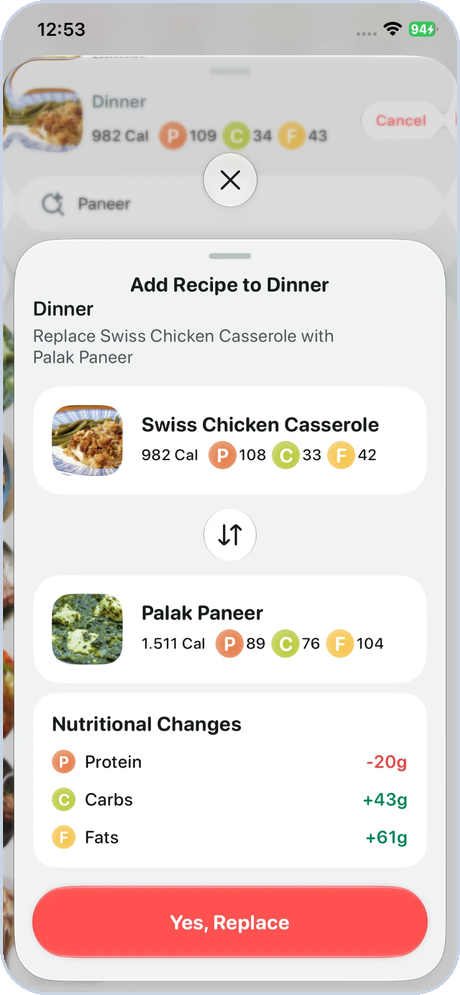
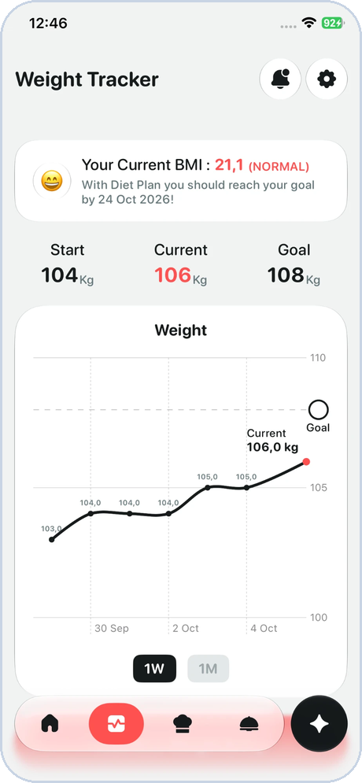
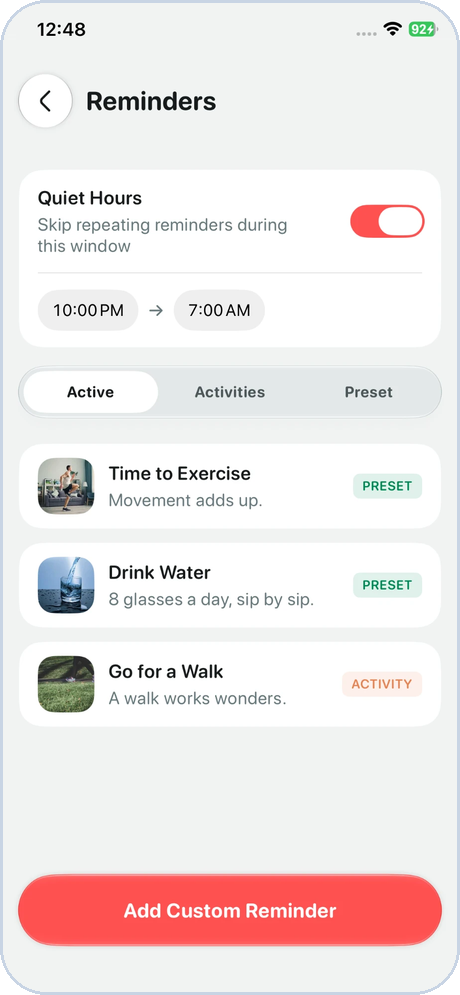
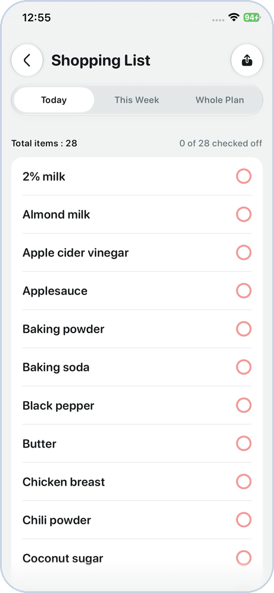
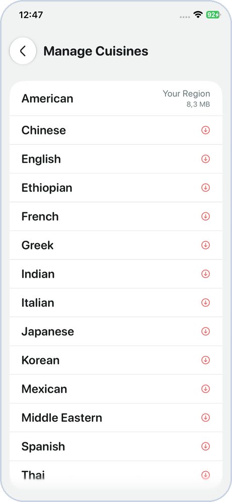
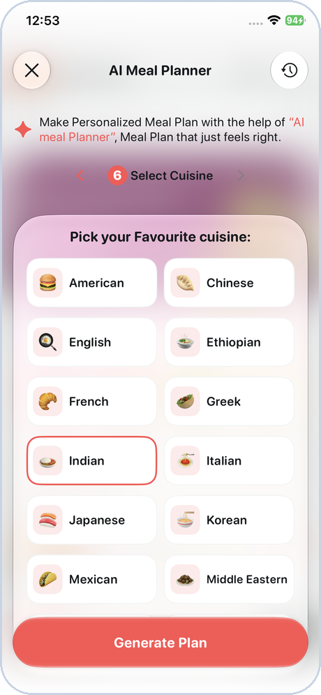

Q3 at a Glance
A new app from first screen to feature-complete, in one quarter.
weeks of development
DietPlan app built end to end
modules & features
Onboarding to AI meal plans
smaller app size
180 MB → 103 MB with On-Demand Resources
QA items resolved
Only 23 items logged for the whole app
Result: DietPlan feature-complete by 8 Sept 2026, with only a 3-day extension.
Steady Delivery, Week on Week
Overall progress from weekly reports.
- JulDesign review, estimates, data research
- AugOnboarding, meals, trackers, reminders, Apple Health
- Late AugNew database, AI meal plans, custom recipes
- Sept23 TL review points, 23 QA items, analytics events
Built the DietPlan App End to End
Every module developed and integrated by me.
Onboarding
Validation, Firebase Auth, Firestore, Storage
Meal Plans & Recipes
Filters, meal swap, meal follow, carbs tracking
Weight & Body Tracking
Weight chart, body measurements
Reminders & Settings
Reminder presets, full settings flow
Apple Health
Reads health data into the app
Universal Links
Share meals & recipes, App Store fallback
Result: Feature-complete app built end to end, with only the premium screens left before release.
DietPlan in Action
Real screens from the app.








Also in DietPlan v2.0
Work that doesn't show in a screenshot.
Data migration for existing users
v2.0 ships over the live app. On first launch it imports each user's profile, weight log, plan and reminders, with safeguards so a bad import can't lock anyone out.
Home screen widgets
Today's meals (tap to complete), weight progress and the next reminder.
Analytics system
A named event catalog, retention events and an in-app event log for testers.
134 automated tests
They cover the meal database, user data storage and the migration from v1.
iPad window support
Layouts follow the window size, so the app works in Split View, Slide Over and Stage Manager as well as full screen.
Automatic translation
Xcode's own string extraction picks up new text, even strings added directly in code, and a script translates it with Google Translate on each debug build.
Built the Meal & Recipe Data from Scratch
Taking ownership of the app's core content.
Starting point
- Source CSV needed significant restructuring to fit the app
- Duplicate entries and inconsistent fields
- Scraping 54 lakh+ recipes from an external site was being considered
What I built
- Clean, non-redundant catalog of 1,977 dishes: 1,454 from the EatThisMuch API and 523 written to fill cuisines it covered thinly
- A teammate found the site and built a scraper for it. I found that it has an API we could call directly, so I used that instead of scraping pages
- Designed the new database and remapped the app's models
- The main catalog ships inside the app. The API is only a search fallback when local results are thin
Result: Reliable, maintainable data that works offline, with the API used only as a fallback.
Smaller, Faster App Download
Optimising what users download.
reduction in app size
Apple On-Demand Resources
Moved heavy content out of the main app bundle, so it downloads only when needed.
Split database
Broke the large database into smaller databases, so users don't download everything at once.
Better first experience
A smaller install and faster first launch, especially on slower networks.

Result: Lighter app for every user, with content delivered on demand.
AI Features, Secured with App Attest
Adopting a newer Apple security technology.
AI meal plan generation
Personalised meal plans from Gemini or OpenAI. The model is configured remotely, so switching needs no app update.
Custom recipe adding
Users can add their own recipes to plans.
Project-level Cloud Function
Moved AI calls from the shared function to a dedicated DietPlan function.
Apple App Attest
Only genuine app installs can call the AI backend. A newer security layer not yet widely used in our projects.

Result: AI features protected against misuse and unauthorised API calls.
AI Backend: Secure & Cost-Controlled
Every AI request passes through safeguards I built into the Cloud Function.
App Attest
Only genuine app installs can call the function
Model allow-list
Requests for any AI model not already defined are rejected
Configurable model
Gemini or ChatGPT, configured from Firebase
Token limit
Requests over the defined token limit are dropped
Usage & cost logs
Daily AI usage and cost logged per user
Built-in tamper check: if the logged daily cost doesn't match the actual AI bill, it signals the backend has been compromised.
Result: AI usage is protected from misuse, limited in cost, and monitored daily.
Also Delivered: Caloric App Release
A second app: key issues fixed so it was ready for release.
Premium & Offers
- Premium screen UI fixes
- Screen not dismissing
- Restore & auto-restore purchases
- Offer screen showing after logout / in review build
Backend
- Cloud Function was created but not wired in correctly
- Connected the app to it properly
Authentication
- Sign-out asked users to log in again, then deleted their data
- Fixed so sign-out works cleanly and safely
Result: Caloric issues fixed across subscriptions, backend and auth, and the app was released.
Quality & Ownership
Going beyond the assigned task list.
Proactive self-QA
While QA cycles were pending, I tested the app myself and fixed anything that didn't feel right.
23 / 23 QA items closed
Only 23 QA items for the entire app. All resolved, and 6 were suggestions rather than bugs.
23 / 23 TL review points done
UI polish across Onboarding, Home and Meals: smooth number transitions, themed controls, infinite recipe carousel.
Analytics ready
Events added across the app so the product team can measure user behaviour from launch.
Growth & Team Contribution
Localization helper
Built an internal tool to automate app string translation. Several developers used it and it worked very well at the time. Google has since tightened its limits, so large batches can fail. The script handles this and the impact is small, but it is less effective than before.
Planning & estimation
Created a module-wise estimated timeline before development and validated the data structure with a senior developer.
New technologies applied this quarter
Area I'm working on
Communicating earlier and more proactively with design and product teams, so dependencies and open questions are raised sooner.
Key Challenges & How I Handled Them
| Challenge | What I did | Outcome |
|---|---|---|
| Source data didn't fit the app's structure | Rebuilt the dataset from the EatThisMuch API + generated dishes | Clean, reliable database |
| Database redesign late in the build | Rebuilt the DB and remapped models and functions | Only a 3-day extension on the timeline |
| Design assets & content arrived late | Prioritised modules without dependencies first | Development never stalled |
| Securing AI calls | Dedicated Cloud Function with Apple App Attest | Backend protected from misuse |
| QA cycles running behind | Self-tested and fixed issues proactively | Only 23 bugs found, none major |
Looking Ahead to Q4
- Integrate the new premium screens once design is final
- Launch DietPlan on the App Store
- Adapt to the new Product Engineer role, managing both iOS and Android apps to reduce cross-team dependency
- Keep improving proactive cross-team communication
Thank you
Bandan Kumar · Q3 2026 Performance Review